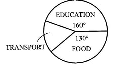
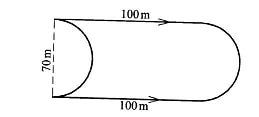
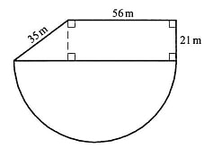
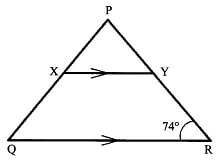
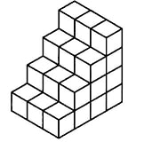
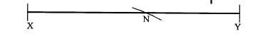
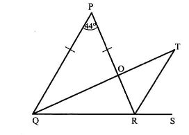
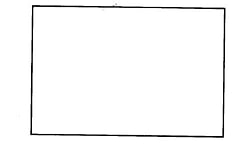
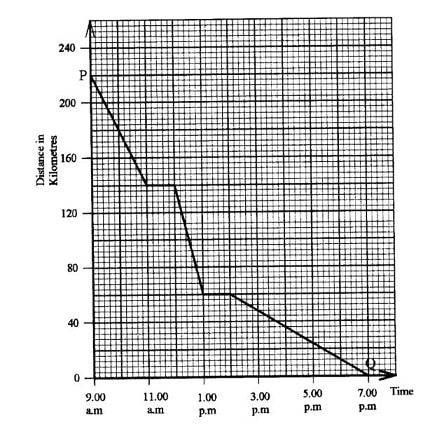

<!DOCTYPE html>
<html>
<head lang="en">
    <meta charset="UTF-8">
	<meta name="viewport" content="initial-scale=1, maximum-scale=1, user-scalable=no, width=device-width">

<title>KCSE exam</title>
<link href ="../../../style1.css" rel ="stylesheet">
<link href="https://fonts.googleapis.com/css?family=Lato" rel="stylesheet">
<script src="http://code.jquery.com/jquery-1.9.1.js"></script>
<audio id="xyz" src="../../../bell.mp3" preload="auto"></audio>
<div class="countdown-wrap">
            <div id="clockdiv">
                <div>
                    <span class="hours"></span>
                    <span class="time-label">HOURS</span>
                </div>
                <div>
                    <span class="minutes"></span>
                    <span class="time-label">MINUTES</span>
                </div>
                <div>
                    <span class="seconds"></span>
                    <span class="time-label">SECS</span>
                </div>
            </div>
        </div>

	
<script src="../../../math.js">

</script>

</head>


<body>
<h1>Good Luck</h1>
<p id="output"></p>


<form id = "quiz" name = "quiz">


<p class = "questions">1. What is 99909909 Written in words? </p>
<input type = "radio"  name = "question1" value = "A"> A). Nine million nine hundred and nine thousand nine hundred and nine<br>
<input type = "radio"  name = "question1" value = "j"><a class="y"> B). Ninety nine million nine hundred and nine thousand nine hundred and nine</a><br>
<input type = "radio"  name = "question1" value = "C"> C). Ninety nine million nine hundred and ninety thousand nine hundred and nine<br>
<input type = "radio"  name = "question1" value = "D"> D). Ninety nine million ninety thousand and ninety nine<br>

<p class = "questions">2. What is 2/3, 5/12, 1/8, 4/5 arranged in ascending order?</p>
<input type = "radio"  name = "question2" value = "j"><a class="y"> A). 1/8, 5/12, 2/3, 4/5 </a><br>
<input type = "radio"  name = "question2" value = "B"> B). 4/5, 2/3, 5/12, 1/8<br>
<input type = "radio"  name = "question2" value = "C"> C). 1/8, 2/3, 4/5, 5/12<br>
<input type = "radio"  name = "question2" value = "D"> D). 2/3, 4/5, 1/8, 5/12<br>
<p class = "questions">3. A farmer harvested 10 tonnes of maize. He used 3500 kg on food and gave 2000 kg to neighbours. How many tonnes of maize did he sell?</p>
<input type = "radio"  name = "question3" value = "A"> A).15.5<br>
<input type = "radio"  name = "question3" value = "B"> B).8.5<br>
<input type = "radio"  name = "question3" value = "C"> C).5.5<br>
<input type = "radio"  name = "question3" value = "j"><a class="y"> D).4.5</a><br>
<p class = "questions">4. A closed cylindrical tank was made using metal sheets. The diameter of the tank was l.4m and its height was 2 m. How many square metres of the metal sheets was used to make the tank? (Take π = 22/7)</p>
<input type = "radio"  name = "question4" value = "A"> A). 3.08<br>
<input type = "radio"  name = "question4" value = "B"> B). 8.8<br>
<input type = "radio"  name = "question4" value = "C"> C). 10.4<br>
<input type = "radio"  name = "question4" value = "j"><a class="y"> D). 11.88</a><br>

<p class = "questions">5. Two men can complete work on a piece of land in 10 days. How many less days will 5 such men require to complete the work on the piece of land?</p>
<input type = "radio"  name = "question5" value = "A"> A).4<br>
<input type = "radio"  name = "question5" value = "j"><a class="y"> B).6</a><br>
<input type = "radio"  name = "question5" value = "C"> C).14<br>
<input type = "radio"  name = "question5" value = "D"> D).15<br>

<p class = "questions">6. What is the value of 1/2+9/10÷18/5 of 1/4?</p>
<input type = "radio"  name = "question6" value = "j"><a class="y"> A).7/10</a><br>
<input type = "radio"  name = "question6" value = "B"> B).11/80<br>
<input type = "radio"  name = "question6" value = "C"> C).17/360<br>
<input type = "radio"  name = "question6" value = "D"> D).69/100<br>

<p class = "questions">7. A cylindrical container has a radius of 7m and a height of 20m. How many litres of oil can it hold when full? (Take?/22/7=) </p>
<input type = "radio"  name = "question7" value = "A"> A). 3080<br>
<input type = "radio"  name = "question7" value = "B"> B). 30800<br>
<input type = "radio"  name = "question7" value = "C"> C). 308000<br>
<input type = "radio"  name = "question7" value = "j"><a class="y"> D). 3080000</a><br>

<p class = "questions">8. At the beginning of the year 2015, there were 1010 boys and 1224 girls in a certain school. At the end of the year, 125 boys and l4l girls left the school. In the year 2016, 115 boys and 84 girls were transferred from the school. What was the population of the school by the end of year 2016?</p>
<input type = "radio"  name = "question8" value = "A"> A). 1968<br>
<input type = "radio"  name = "question8" value = "B"> B). 2100<br>
<input type = "radio"  name = "question8" value = "j"><a class="y"> C). 1769</a><br>
<input type = "radio"  name = "question8" value = "D"> D). 2234<br>

<p class = "questions">9. Which one of the following is true about a quadrilateral?</p>
<input type = "radio"  name = "question9" value = "j"><a class="y"> A). Has four sides</a><br>
<input type = "radio"  name = "question9" value = "B"> B). All sides are equal<br>
<input type = "radio"  name = "question9" value = "C"> C). All angles are equal<br>
<input type = "radio"  name = "question9" value = "D"> D). Opposite sides are parallel<br>

<p class = "questions">10. The pie-chart below shows how Atieno spent her salary. 
 <p></p>
If her salary was sh 18000, how much more did she spend on education than on transport?
</p>
<input type = "radio"  name = "question10" value = "A"> A). sh1150O<br>
<input type = "radio"  name = "question10" value = "B"> B). sh8000<br>
<input type = "radio"  name = "question10" value = "j"><a class="y"> C). sh4500</a><br>
<input type = "radio"  name = "question10" value = "D"> D). sh3500<br>

<p class = "questions">11. A piece of land, 7.25ha, is to be divided into O.125ha plots. If two houses were to be built in each plot, how many houses would be built?</p>
<input type = "radio"  name = "question11" value = "A"> A). 11.6<br>
<input type = "radio"  name = "question11" value = "B"> B). 29<br>
<input type = "radio"  name = "question11" value = "C"> C). 58<br>
<input type = "radio"  name = "question11" value = "j"><a class="y"> D). 116</a><br>

<p class = "questions">12. What is the value of 816 + 4 + 6(12-5)?</p>
<input type = "radio"  name = "question12" value = "A"> A). 11.7<br>
<input type = "radio"  name = "question12" value = "j"><a class="y"> B). 246</a><br>
<input type = "radio"  name = "question12" value = "C"> C). 271<br>
<input type = "radio"  name = "question12" value = "D"> D). 3306<br>

<p class = "questions">13. The ?gure below represents a piece of land 
 <p></p>
What distance would be covered if one was to walk two and a half times around it? (Take ?= 22/7)?
</p>
<input type = "radio"  name = "question13" value = "A"> A). 1600m<br>
<input type = "radio"  name = "question13" value = "j"><a class="y"> B). l050m</a><br>
<input type = "radio"  name = "question13" value = "C"> C). 775m<br>
<input type = "radio"  name = "question13" value = "D"> D). 420m<br>

<p class = "questions">14. A matatu carries 14 passengers per trip. In one day, the matatu makes 3 trips. How much money docs the malatu make in the month of April, if each passenger pays sh 70 per trip?</p>
<input type = "radio"  name = "question14" value = "j"><a class="y"> A). 88200</a><br>
<input type = "radio"  name = "question14" value = "B"> B). 29400<br>
<input type = "radio"  name = "question14" value = "C"> C). 2940<br>
<input type = "radio"  name = "question14" value = "D"> D). 980<br>

<p class = "questions">15. Construct a parallelogram EFGH such that lines GH = 7cm, HE = 5 cm and angle GHE = 45?.
What is the length of a half the diagonal HF?
</p>
<input type = "radio"  name = "question15" value = "A"> A). 2.50m<br>
<input type = "radio"  name = "question15" value = "B"> B). 5.0cm<br>
<input type = "radio"  name = "question15" value = "j"><a class="y"> C). 5.5cm</a><br>
<input type = "radio"  name = "question15" value = "D"> D). 11.0cm<br>

<p class = "questions">16. The diagram below represents a piece of Working Space land in the shape of a trapezium and a semi-circle.
 
(Take ? = 22/7)
</p>
<input type = "radio"  name = "question16" value = "A"> A). 4242<br>
<input type = "radio"  name = "question16" value = "B"> B). 70.14<br>
<input type = "radio"  name = "question16" value = "j"><a class="y"> C). 42.42</a><br>
<input type = "radio"  name = "question16" value = "D"> D). 32.34<br>

<p class = "questions">17. In a harambee of the attendance were ~ 10 women, inf the remainder were men and the rest were children. What fraction of the attendance were children‘?</p>
<input type = "radio"  name = "question17" value = "A"> A). 49/50<br>
<input type = "radio"  name = "question17" value = "B"> B). 29/50<br>
<input type = "radio"  name = "question17" value = "C"> C). 21/50<br>
<input type = "radio"  name = "question17" value = "j"><a class="y"> D). 7/25</a><br>

<p class = "questions">18. What is the value of x in the equation 2(x+3 +1/2x+1)=116?</p>
<input type = "radio"  name = "question18" value = "A"> A). 74<sup>2/3</sup><br>
<input type = "radio"  name = "question18" value = "B"> B). 44<sup>4/5</sup><br>
<input type = "radio"  name = "question18" value = "j"><a class="y"> C). 36</a><br>
<input type = "radio"  name = "question18" value = "D"> D). 27<br>

<p class = "questions">19. What is the product of the LCM and HCF of the numbers 10, 20 and 40?</p>
<input type = "radio"  name = "question19" value = "A"> A. 10<br>
<input type = "radio"  name = "question19" value = "B"> B. 40<br>
<input type = "radio"  name = "question19" value = "C"> C. 50<br>
<input type = "radio"  name = "question19" value = "j"><a class="y"> D. 400</a><br>

<p class = "questions">20. What is the value of <span style="white-space: nowrap; font-size:larger">
&radic;<span style="text-decoration:overline;">&nbsp;228 +162<sup>2</sup>&nbsp;</span>
</span> </p>
<input type = "radio"  name = "question20" value = "A"> A. 418<br>
<input type = "radio"  name = "question20" value = "B"> B. 274<br>
<input type = "radio"  name = "question20" value = "C"> C. 50<br>
<input type = "radio"  name = "question20" value = "j"><a class="y"> D. 22</a><br>

<p class = "questions">21. The perimeter of a square garden is 44 metres. What is the area of the garden in square metres?</p>
<input type = "radio"  name = "question21" value = "A"> A. 484<br>
<input type = "radio"  name = "question21" value = "j"><a class="y"> B. 121</a><br>
<input type = "radio"  name = "question21" value = "C"> C. 22<br>
<input type = "radio"  name = "question21" value = "D"> D. 11<br>

<p class = "questions">22. A rectangular container measures 4m by 3 m by 500 cm. The container is completely ?lled with 0.5 m long cubic packets. How many such packets are needed to ?ll 3/4 the container?</p>
<input type = "radio"  name = "question22" value = "A"> A. 120<br>
<input type = "radio"  name = "question22" value = "j"><a class="y"> B. 360</a><br>
<input type = "radio"  name = "question22" value = "C"> C. 480<br>
<input type = "radio"  name = "question22" value = "D"> D. 36000<br>

<p class = "questions">23. Juma was given 2 one thousand shilling notes to buy the following items:</p>2 kg of meat at sh. 400 per kilogram
<p>2 kg of tomatoes at sh. 300 per kilogram</p>
<p>I 21 kg of onions at sh. 120 per kilogram</p>
<p>21 kg of potatoes at sh. 40 per kilogram</p>
<p>How much money would he remain with after buying the items?</p>
<input type = "radio"  name = "question23" value = "j"><a class="y"> A. sh400</a><br>
<input type = "radio"  name = "question23" value = "B"> B. sh700<br>
<input type = "radio"  name = "question23" value = "C"> C. sh1140<br>
<input type = "radio"  name = "question23" value = "D"> D. sh1300<br>

<p class = "questions">24. What is the value of Z( <sup>x<sup>2</sup></sup>&frasl;<sub>4</sub>+y )- &frac12; Where x=3, y=x-2 and Z= &frac12;?</p>
<input type = "radio"  name = "question24" value = "j"><a class="y"> A. 1<sup><sup>1</sup>&frasl;<sub>8</sub></sup> </a><br>
<input type = "radio"  name = "question24" value = "B"> B. <sup>7</sup>&frasl;<sub>8</sub> <br>
<input type = "radio"  name = "question24" value = "C"> C. <sup>3</sup>&frasl;<sub>4</sub> <br>
<input type = "radio"  name = "question24" value = "D"> D. <sup>3</sup>&frasl;<sub>8</sub> <br>

<p class = "questions">25. A motorist started her journey on Monday at 10.00 p.m. She arrived at her destination after 6 hours and 15 minutes. On what day and at what time did she arrive at her destination in a.m./p.m. system?</p>
<input type = "radio"  name = "question25" value = "A"> A. Monday 4.15 p.m.<br>
<input type = "radio"  name = "question25" value = "B"> B. Tuesday 4.15 p.m.<br>
<input type = "radio"  name = "question25" value = "C"> C. Monday 4.15 a.m.<br>
<input type = "radio"  name = "question25" value = "j"><a class="y"> D. Tuesday 4.15 a.m.</a><br>

<p class = "questions">26. A triangular right angled piece of land has an area of 84 ml. Its’  base is 24m long. What is the length of its longest side?</p>
<input type = "radio"  name = "question26" value = "A"> A. 25m<br>
<input type = "radio"  name = "question26" value = "B"> B. 13m<br>
<input type = "radio"  name = "question26" value = "C"> C. 7m<br>
<input type = "radio"  name = "question26" value = "j"><a class="y"> D. 3.5m</a><br>

<p class = "questions">27. Waisha bought a cow for sh42000 after being offered a 16% discount. How much money would have been the discount had she bought the cow for sh21000?</p>
<input type = "radio"  name = "question27" value = "A"> A. sh 4000<br>
<input type = "radio"  name = "question27" value = "B"> B. sh 14250<br>
<input type = "radio"  name = "question27" value = "j"><a class="y"> C. sh 29000</a><br>
<input type = "radio"  name = "question27" value = "D"> D. sh 50000<br>

<p class = "questions">28. What is the difference between the next two numbers in the pattern: 4, 9, 25, 49,121,...,...,?</p>
<input type = "radio"  name = "question28" value = "j"><a class="y"> A. 120</a><br>
<input type = "radio"  name = "question28" value = "B"> B. 169<br>
<input type = "radio"  name = "question28" value = "C"> C. 289<br>
<input type = "radio"  name = "question28" value = "D"> D. 458<br>

<p class = "questions">29. Natasha is paid a basic salary of sh 12000 in a month as a sales agent. She is also paid a 5% commission on goods sold above sh 20000. In a certain month, she sold goods worth sh 120000. How much money did she earn, in total, that month?</p>
<input type = "radio"  name = "question29" value = "A"> A. sh 5000<br>
<input type = "radio"  name = "question29" value = "j"><a class="y"> B. sh 17000</a><br>
<input type = "radio"  name = "question29" value = "C"> C. sh 18000<br>
<input type = "radio"  name = "question29" value = "D"> D. sh 19000<br>

<p class = "questions">30. In an election 150 people participated in voting. Out of these; 0.14 voted for candidate P, 0.2 voted for candidate Q, while  of the remaining people voted for candidate R. The rest cast votes that were declared invalid.
How many people cast invalid votes?
</p>
<input type = "radio"  name = "question30" value = "A"> A. 21<br>
<input type = "radio"  name = "question30" value = "B"> B. 30<br>
<input type = "radio"  name = "question30" value = "j"><a class="y"> C. 33</a><br>
<input type = "radio"  name = "question30" value = "D"> D. 66<br>

<p class = "questions">31. What is the product of 2.645 and 5.06 in 2 decimal places?</p>
<input type = "radio"  name = "question31" value = "A"> A. 13.41<br>
<input type = "radio"  name = "question31" value = "B"> B. 13.43<br>
<input type = "radio"  name = "question31" value = "j"><a class="y"> C.13.38</a><br>
<input type = "radio"  name = "question31" value = "D"> D.13.46<br>

<p class = "questions">32. What is &frac13; (x + 6) + &frac12; (x - 2<sup>2</sup>) when simpli?ed?</p>
<input type = "radio"  name = "question32" value = "A"> A. &frac56; x+2<br>
<input type = "radio"  name = "question32" value = "j"><a class="y"> B. &frac56;x</a><br>
<input type = "radio"  name = "question32" value = "C"> C. &frac56;x+1<br>
<input type = "radio"  name = "question32" value = "D"> D. 2x<br>


<p class = "questions">33. The cash price of a T.V. set was sh 22000. Maria bought the T.V. set on hire purchase terms. She was allowed to pay a deposit equal to 40% of the cash price and eight equal monthly instalments of sh 2800. How much more money did she pay than the cash price?</p>
<input type = "radio"  name = "question33" value = "A"> A. sh 8800<br>
<input type = "radio"  name = "question33" value = "j"><a class="y"> B. sh 9200</a><br>
<input type = "radio"  name = "question33" value = "C"> C. sh 22400<br>
<input type = "radio"  name = "question33" value = "D"> D. sh 31200<br>

<p class = "questions">34. Lorina deposited sh 50000 at a ?nancial institution that paid Simple Interest at the rate of 2&frac12;% p.a. How much did he have at the end of three years, altogether?</p>
<input type = "radio"  name = "question34" value = "A"> A. sh l6l250<br>
<input type = "radio"  name = "question34" value = "B"> B. sh 57500<br>
<input type = "radio"  name = "question34" value = "j"><a class="y"> C. sh 53750</a><br>
<input type = "radio"  name = "question34" value = "D"> D. sh 3750<br>

<p class = "questions">35. The mean mark of the scores obtained by ten pupils in a test was l2. The marks obtained by eight of the pupils were:
13, 11, 10, 9, 10, 18, 11, 10
If the other two pupils obtained equal marks, what was the median mark in the test?
</p>
<input type = "radio"  name = "question35" value = "A"> A. 10<br>
<input type = "radio"  name = "question35" value = "B"> B. 10.5<br>
<input type = "radio"  name = "question35" value = "j"><a class="y"> C. 11</a><br>
<input type = "radio"  name = "question35" value = "D"> D. 14<br>

<p class = "questions">36. In the ?gure below line XY is parallel to line QR. Line XY = line PY and angle QRP = 74&#176;. 
<p> </p>
What is the size of angle RQP?
</p>
<input type = "radio"  name = "question36" value = "A"> A. 37&#176;<br>
<input type = "radio"  name = "question36" value = "j"><a class="y"> B. 53&#176;</a><br>
<input type = "radio"  name = "question36" value = "C"> C. 106&#176;<br>
<input type = "radio"  name = "question36" value = "D"> D. 127&#176;<br>

<p class = "questions">37. What is the place value of digit 6 in 52.25 &#247; 4?</p>
<input type = "radio"  name = "question37" value = "A"> A. tenths<br>
<input type = "radio"  name = "question37" value = "j"><a class="y"> B. hundredths</a><br>
<input type = "radio"  name = "question37" value = "C"> C. thousandths<br>
<input type = "radio"  name = "question37" value = "D"> D. ten thousandths<br>

<p class = "questions">38. The figure below represents an incomplete stack made of blocks.
<p></p>
How many blocks are required to complete the stack?
</p>
<input type = "radio"  name = "question38" value = "A"> A. 60<br>
<input type = "radio"  name = "question38" value = "B"> B. 48<br>
<input type = "radio"  name = "question38" value = "C"> C. 30<br>
<input type = "radio"  name = "question38" value = "j"><a class="y"> D. 18</a><br>

<p class = "questions">39. A rectangular water tank whose base measures 5.2m by 4m has a height of 3 metres. The tank is three quarter full. How many litres of water are needed to ?ll the tank?</p>
<input type = "radio"  name = "question39" value = "A"> A. 62400<br>
<input type = "radio"  name = "question39" value = "B"> B. 46800<br>
<input type = "radio"  name = "question39" value = "j"><a class="y"> C. 15600</a><br>
<input type = "radio"  name = "question39" value = "D"> D. 15.6<br>

<p class = "questions">40. What is the simplest form of the ratio: 6(&frac13; - &frac14;):(&frac12; + &frac13;)?</p>
<input type = "radio"  name = "question40" value = "j"><a class="y"> A. 3:5</a><br>
<input type = "radio"  name = "question40" value = "B"> B. 5:3<br>
<input type = "radio"  name = "question40" value = "C"> C. 6:10<br>
<input type = "radio"  name = "question40" value = "D"> D. 21:10<br>

<p class = "questions">41. Karai is x years old and two years older than his wife. In ten years' time he will be 3 times as old as his daughter. What will be their total age then? </p>
<input type = "radio"  name = "question41" value = "A"> A. 5x + 48<br>
<input type = "radio"  name = "question41" value = "B"> B. 2&frac13; + 25&frac13; <br>
<input type = "radio"  name = "question41" value = "C"> C. 2&frac13;x + 8<br>
<input type = "radio"  name = "question41" value = "j"><a class="y"> D. 2&frac13; + 21&frac13;</a><br>

<p class = "questions">42. Line XY below is a straight line. The arc at point N has been constructed from point P. Construct a perpendicular line from P to line XY, using the arc at N. 
<p> </p>
What is the length of the perpendicular distance from P to line XY?
</p>
<input type = "radio"  name = "question42" value = "A"> A. 6.40m<br>
<input type = "radio"  name = "question42" value = "j"><a class="y"> B. 4.8 cm</a><br>
<input type = "radio"  name = "question42" value = "C"> C. 3.5 cm<br>
<input type = "radio"  name = "question42" value = "D"> D. 2.3 cm<br>

<p class = "questions">43. Asha made a pro?t of sh 18000 from her trade. She spent &frac13; of the pro?t on food and &frac25; of the remainder on paying bills and fuel. She saved the rest. How much money did she save?</p>
<input type = "radio"  name = "question43" value = "A"> A. sh 13200<br>
<input type = "radio"  name = "question43" value = "j"><a class="y"> B. sh 7200</a><br>
<input type = "radio"  name = "question43" value = "C"> C. sh 6000<br>
<input type = "radio"  name = "question43" value = "D"> D. sh 4800<br>

<p class = "questions">44. Chebet bought a soft set for sh 64000. The sofa set was later sold, making a 20% loss. For how much was the sofa set sold?</p>
<input type = "radio"  name = "question44" value = "A"> A. sh 80000<br>
<input type = "radio"  name = "question44" value = "B"> B. sh 76800<br>
<input type = "radio"  name = "question44" value = "j"><a class="y"> C. sh 51200</a><br>
<input type = "radio"  name = "question44" value = "D"> D. sh 12800<br>

<p class = "questions">45. The level of fuel in a container decreased by 2% each hour. If the capacity of fuel in the container was 1600 litres, what was the capacity after 2 hours?</p>
<input type = "radio"  name = "question45" value = "A"> A. 1664.64<i>l</i><br>
<input type = "radio"  name = "question45" value = "B"> B. 1568<i>l</i><br>
<input type = "radio"  name = "question45" value = "j"><a class="y"> C. 1536.64<i>l</i></a><br>
<input type = "radio"  name = "question45" value = "D"> D. 1536<i>l</i><br>

<p class = "questions">46. Kuria takes 2 h 15 min to cycle from home to the market at an average speed of 8km/h. He cycles from the market back home at an average speed of 12km/h. How much time does Kuria take to cycle from home to the market and back?</p>
<input type = "radio"  name = "question46" value = "j"><a class="y"> A. 3&frac34; hours</a><br>
<input type = "radio"  name = "question46" value = "B"> B. 3&frac35; hours<br>
<input type = "radio"  name = "question46" value = "C"> C. 1&frac12; hours<br>
<input type = "radio"  name = "question46" value = "D"> D. 5&frac58; hours<br>

<p class = "questions">47. In the ?gure below, QT bisects angle PQR. Angle RPQ = 44&#176, line PQ = PR and QRS is a straight line. 
<p> </p>
What is the size of angle QOP?
</p>
<input type = "radio"  name = "question47" value = "A"> A. 34&#176;<br>
<input type = "radio"  name = "question47" value = "B"> B. 68&#176;<br>
<input type = "radio"  name = "question47" value = "C"> C. 78&#176;<br>
<input type = "radio"  name = "question47" value = "j"><a class="y"> D. 102&#176;</a><br>

<p class = "questions">48. The table below shows the type of vehicles and the number of people transported, in each type of a vehicle, to a rally on Saturday and Sunday.
<table border="1" cellpadding="0" cellspacing="0" style="border-collapse: collapse" width="300">
<tr>
    <td><b>Type of vehicle/Day </b></td>
    <td><b> No. of cars</b></td>
    <td><b>No. of Bodabodas </b></td>
    <td><b>No. of Matatus </b></td>
    
</tr>
<tr>
    <td><b>Saturday </b></td>
    <td >58</td>
    <td>102</td>
    <td>20</td>
    
</tr>
<tr>
    <td><b>Sunday </b></td>
    <td >45</td>
    <td>127</td>
    <td>18</td>
    
</tr>
</table><br/>

Each car carried 4 people, each bodaboda carried 2 people and each matatu carried 14 people. How many people were transported to the rally by the end of the second day?
</p>
<input type = "radio"  name = "question48" value = "A"> A. 40<br>
<input type = "radio"  name = "question48" value = "B"> B. 370<br>
<input type = "radio"  name = "question48" value = "C"> C. 716<br>
<input type = "radio"  name = "question48" value = "j"><a class="y"> D. 1402</a><br>

<p class = "questions">49. The figure below represents a rectangular plot of land drawn to scale l:1000. 
<p> </p>
What is the actual area of the plot of land in hectares?
</p>
<input type = "radio"  name = "question49" value = "A"> A. 2400<br>
<input type = "radio"  name = "question49" value = "B"> B. 24<br>
<input type = "radio"  name = "question49" value = "C"> C. 2.4<br>
<input type = "radio"  name = "question49" value = "j"><a class="y"> D. 0.24</a><br>

<p class = "questions">50. The graph below shows a journey by a cyclist from city P to city Q. 
<p> </p>
Between what times was the average speed lowest?
</p>
<input type = "radio"  name = "question50" value = "j"><a class="y"> A. 2.00 p.m. and 7.00 p.m.</a><br>
<input type = "radio"  name = "question50" value = "B"> B. 9.00 a.m. and 11.00 a.m.<br>
<input type = "radio"  name = "question50" value = "C"> C. 12.00 noon and 1.00 p.m.<br>
<input type = "radio"  name = "question50" value = "D"> D. 12.00 noon and 7.00 p.m.<br>

<input type="button" id="button" value="Get Results" onClick="getScore(this.form)" style="block">


</form>

<div id = "after_submit">
<p id = "number_correct"></p>
<p id = "percentage"></p>
<p id = "message"></p>
<p id = "text"></p>


</div>
<script src="../../../javascript.js">

</script>
</body>
</html>


